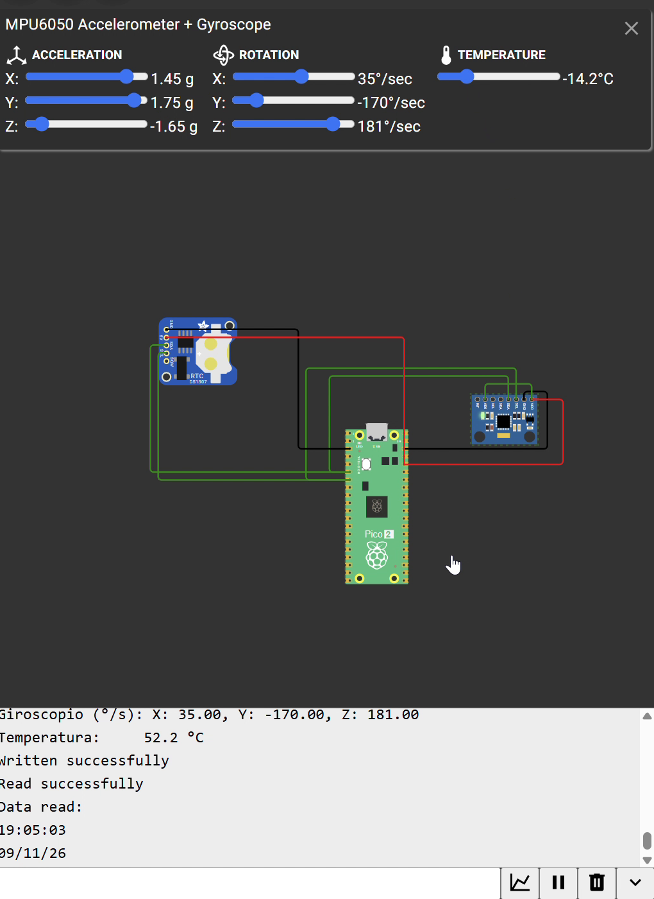

I2C — Reading a DS1307 RTC and an MPU6050 on the Same Bus (Wokwi)
Objective
Read two I2C devices on the same bus of the Pico 2: a DS1307 RTC (time and date) and an MPU6050 (acceleration, gyroscope and temperature). Simulated in Wokwi.
Materials (Wokwi)
- Raspberry Pi Pico 2
- DS1307 RTC module
- MPU6050 module
- Wires for SDA, SCL, power and GND
Circuit Diagram
Pico GPIO4 (I2C0 SDA) → DS1307 SDA and MPU6050 SDA
Pico GPIO5 (I2C0 SCL) → DS1307 SCL and MPU6050 SCL
Pico 3V3 → DS1307 VCC and MPU6050 VCC
Pico GND → DS1307 GND and MPU6050 GND
MPU6050 AD0 → 3V3 (changes its address to 0x69)

DS1307 and MPU6050 on the same I2C bus in Wokwi
- I2C only uses 2 lines for any number of devices: SDA (data) and SCL (clock, generated by the Pico).
- They're open-drain, so they need pull-ups. Wokwi's modules already have them; on a real circuit I'd use 4.7 kΩ to 3.3 V.
Source Code
#define RTC_ADDR 0x68 // DS1307 (fixed)
#define MPU_ADDR 0x69 // MPU6050 with AD0 = 1, so it doesn't collide with the RTC
...
// START + addr|W + reg 0x3B, no STOP → REPEATED START + addr|R + 14 bytes + NACK + STOP
int w2 = i2c_write_blocking(I2C_PORT, MPU_ADDR, ®mpu, 1, /*nostop=*/true);
if (w2 < 0) { printf("I2C error (ret=%d)\n", w2); goto next2; }
int r2 = i2c_read_blocking(I2C_PORT, MPU_ADDR, memory2, sizeof(memory2), /*nostop=*/false);
...
int16_t accel_y_raw = (memory2[2] << 8) | memory2[3]; // big-endian: high byte first
int16_t temp_raw = (memory2[6] << 8) | memory2[7];
float accel_y = accel_y_raw / 16384.0; // ±2 g
float temperatura = (temp_raw / 340.0) + 36.53; // datasheet formula
...
// RTC registers are BCD, so %02X prints them as decimal digits
printf("%02X:%02X:%02X \n", memory[2], memory[1], memory[0]);
How it works
Addresses
Both chips use 0x68 by default. The DS1307 can't change its address, but the MPU6050 can with the AD0 pin:
| Device | Address | Why |
|---|---|---|
| DS1307 | 0x68 |
Fixed |
| MPU6050 | 0x69 |
AD0 = 1 |
If both had the same address they'd answer at the same time and the data on SDA would get corrupted.
Reading a register (repeated start)
i2c_write_blocking(..., true): sends the register number without STOP, so the Pico keeps the bus.i2c_read_blocking(..., false): repeated start, reads N bytes (the device auto-increments the register) and ends with STOP.
If the device doesn't answer, the functions return a negative value. That's why I check w2 < 0.
Decoding the MPU6050
From 0x3B it returns 14 bytes: accel X/Y/Z, temperature, gyro X/Y/Z (2 bytes each).
- Each value is a signed 16-bit number, big-endian →
(high << 8) | lowstored in anint16_tto keep the sign. - Conversions (default ranges):
| Quantity | Range | Conversion |
|---|---|---|
| Acceleration | ±2 g | raw / 16384.0 |
| Gyroscope | ±250 °/s | raw / 131.0 |
| Temperature | — | raw / 340.0 + 36.53 |
Decoding the DS1307
- The time is stored in BCD: each nibble is one decimal digit (35 s =
0x35). - That's why
%02Xprints the time directly. To do math with it I'd need to convert:(bcd >> 4) * 10 + (bcd & 0x0F). - Bit 7 of the seconds register is CH (Clock Halt). Writing the time with CH = 0 starts the clock.
Results
- The RTC was written ("Written successfully") and read back:
19:05:03,09/11/26. - The MPU6050 follows the sliders in Wokwi: gyro
X: 35.00, Y: -170.00, Z: 181.00, the same values I set in the simulator. - Neither device interfered with the other, so the
AD0change worked.
Video
What I learned
- Many devices can share the I2C bus as long as each one has a different address.
AD0fixed the 0x68 conflict. - Reading a register = write without STOP + repeated-start read, and I always check the return value.
- Each device decodes differently: the MPU6050 uses signed big-endian values with datasheet scale factors, and the DS1307 uses BCD.
- Wokwi made it easy to check, because I could compare the sliders against the program output.